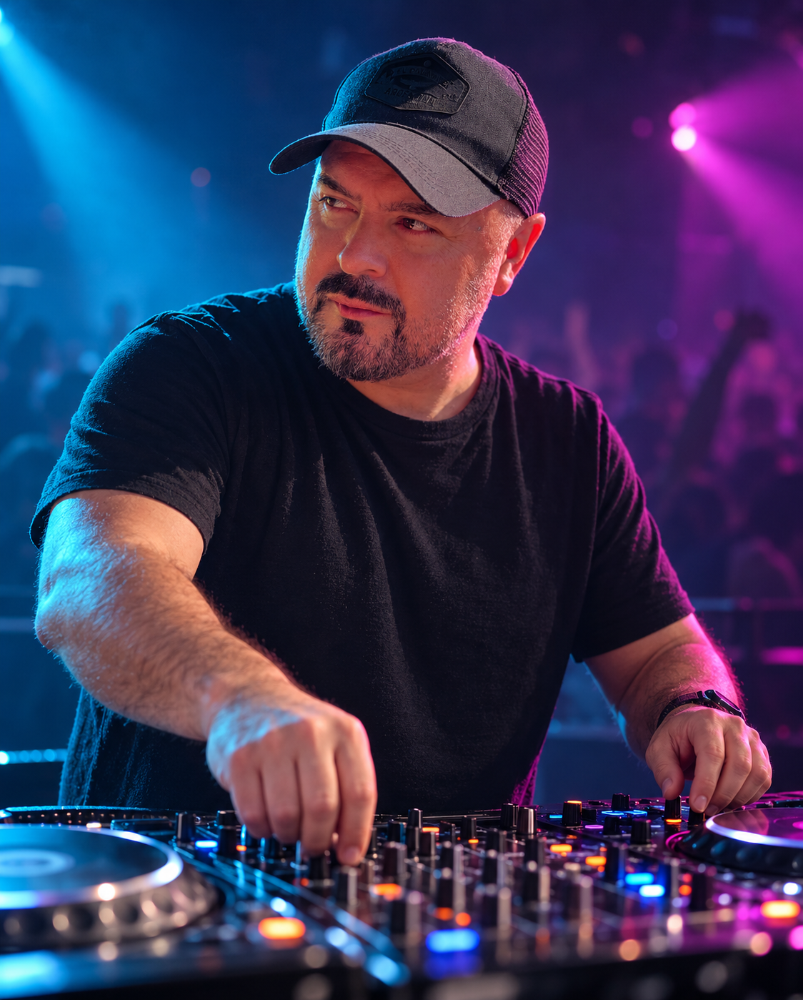
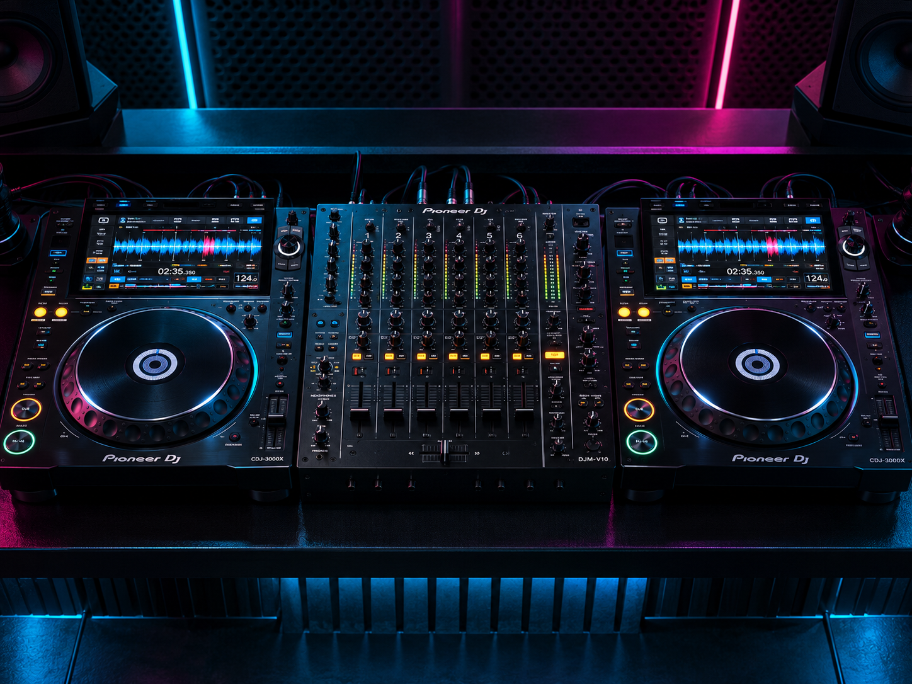

DJ Profesional 1
Uso de cabina, selección musical, BPM, ecualización y mezcla acompasada desde cero.
12 clases24 horas
Más información ↗Academia de DJs y producción musical. Formación presencial u online, equipamiento profesional y una nueva comunidad para seguir creciendo dentro y fuera de la cabina.
Una comunidad que mezcla
Conectá, practicá y compartí.

Producciones, remixes y sets del director de la academia y de artistas formados en nuestra comunidad.
Programas presenciales y online, con equipamiento disponible en la academia y certificación Musik al completar la formación.
Una formación integral para dominar cabina, vinilos, software, Ableton Live y performance Hybrid.
Ver programa completo ↗
Uso de cabina, selección musical, BPM, ecualización y mezcla acompasada desde cero.
Ableton Live, samples, loops, automatización, instrumentos virtuales y creación de tracks.
La experiencia completa: técnica DJ, creación musical, MIDI, efectos y producción con Ableton.
Elegí el recorrido que mejor acompañe tu nivel y tu objetivo artístico.
Cabina, selección musical, BPM, ecualización y mezcla acompasada. No requiere conocimientos previos.
Ver curso ↗Técnicas avanzadas para perfeccionar la mezcla, la performance y el dominio del equipamiento.
Consultar ↗Ableton Live, samples, loops, automatización, instrumentos virtuales y creación de tracks.
Ver curso ↗Profundización creativa y técnica para desarrollar producciones propias con acabado profesional.
Consultar ↗DJ Inicial y Avanzado, vinilos, Ableton Live modo DJ y performance Hybrid.
Ver carrera ↗Formación completa que combina técnica DJ, creación musical, MIDI y producción.
Ver carrera ↗Composición, interpretación y herramientas digitales para desarrollar una identidad sonora propia.
Consultar ↗Armonía, interpretación y aplicación práctica de teclados y sintetizadores en música electrónica.
Consultar ↗Dominio específico del estándar de cabina profesional y sus funciones de performance.
Consultar ↗Técnicas de scratch, creatividad, improvisación y recursos expresivos para DJs.
Consultar ↗Formación a distancia para aprender y avanzar desde cualquier lugar.
Consultar por WhatsApp ↗Una sección dedicada a equipamiento y recursos para DJs y productores.
Visitar sección ↗También podés estudiar DJ Avanzado · Producción Musical 2 · Músico Electrónico · Teclado y Sintetizador · CDJs Pioneer · Scratch & Freestyle
Ver toda la oferta ↗Masterclasses, lanzamientos, beneficios y experiencias especiales. Todas las novedades se actualizan desde el panel de administración.
Una propuesta de comunidad por membresía con material exclusivo, feedback, sesiones y encuentros para alumnos y graduados. Entrar al Club ↗
8 clases · Nivel inicial
Live session · House
20 tracks · Curado por Musik
Explorá tips, tracks y materiales seleccionados por MUSIK. El catálogo es público y las descargas están disponibles para miembros.
Podés conocer todos los recursos. Para descargar, ingresá con tu cuenta de miembro.
Ejemplo de cómo se verían workshops, prácticas abiertas y noches exclusivas para miembros.
Musik Lab · 18:30 h
Ubicación secreta · 23:59 h
Musik Studio · 17:00 h
Planes y valores ilustrativos para visualizar el nuevo modelo de comunidad.
Para empezar a mezclar y explorar.
La experiencia completa de Musik.